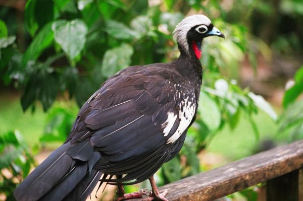
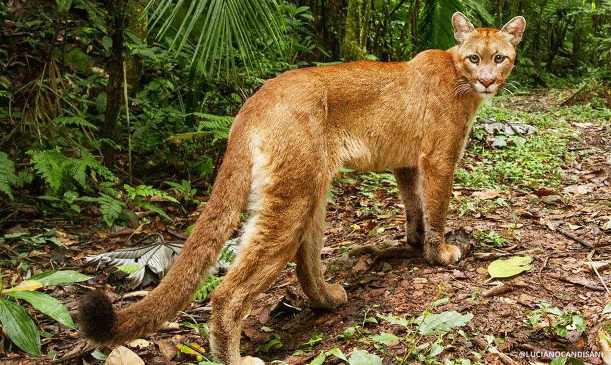
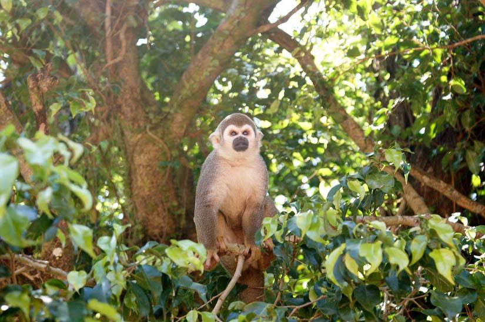
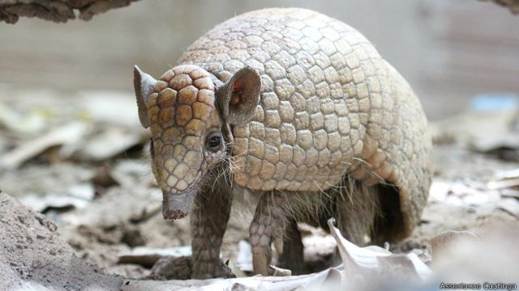
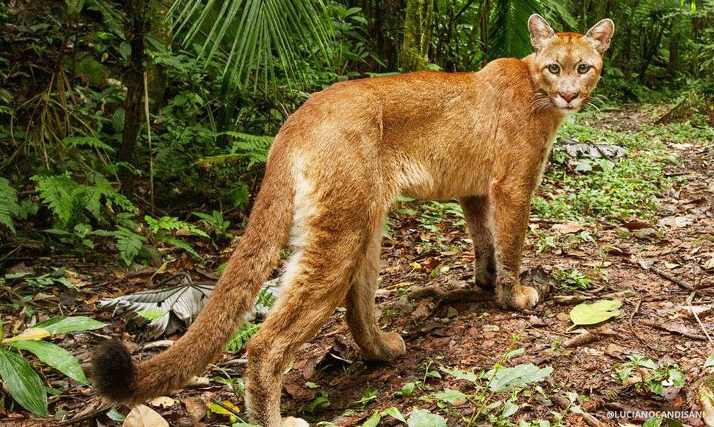
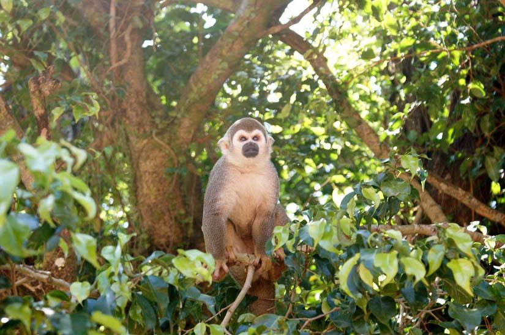
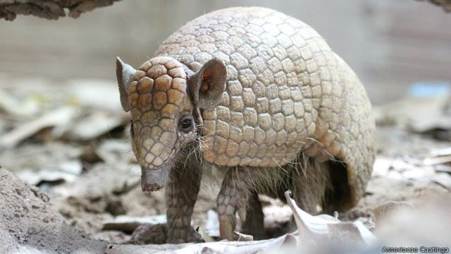
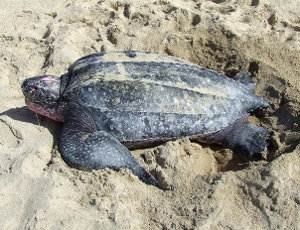

Brazil es uno de los paises con mayor biodiversidad en su fauna y flora nativa.Se estima que de el 10 al 15% de las especies existentes en el mundo habitan en los ecosistemas brasileños.No obstante, el pais sudamericano posee mas de 1.150 animales en peligro de extincion lo que significa que mas de 95% de su fauna se encuentra en estado de riesgo o vulnerabilidad actualmente y uno de ellos son los,delfines rosados,lobo guara,ariranha,cuxio negro,jacutinga, lagartija de arena,muriqui del norte, pajaro carpintero amarillo, sapo hoja,tortuga de cuero entre otros animales


Y como ya sabemos que Brazil, es muy rica en su fauna al igual que su flora nativa es cuando mas debemos cuidarla ya que muchos no tienen ese privilegio de tener tanta flora y fauna, pero sin nosotros no cuidamos bien de esa flora y fauna Brazil corre el peligro de que se acabe esa flora y esa fauna y por lo tanto deberiamos decir no a la caza de animales y no ala venta de animales para que no acavemos con la vida animal y con nuestras vidas ya que nos afectaria en gran manera
 





DI NO A LA CAZA, DI NO A LA VENTA DE ANIMALES, NO ACABEMOS CON LOS ANIMALES
